<!DOCTYPE html>
<html>
<head><meta name="generator" content="Hexo 3.8.0">
  <meta charset="utf-8">
  
  <title>交互设计七大定律上 | guowj</title>
  <meta name="viewport" content="width=device-width, initial-scale=1, maximum-scale=1">
  
  <meta name="keywords" content="产品交互设计">
  
  
  
  
  <meta name="description" content="&amp;nbsp;&amp;nbsp;&amp;nbsp;&amp;nbsp;&amp;nbsp;&amp;nbsp;“除非有更好的选择，否则就遵从标准”，这是交互设计之父阿兰·库珀说过的。在交互设计领域，有些法则是从用户的行为逻辑中总结出来的，掌握这些法则能让我们高效的完成自己的设计。因为讲的比较仔细，所以会分为上下两篇展开记录。本篇主要记录下菲茨定律、席克定律和神奇数字 7±2 法则。">
<meta name="keywords" content="产品,交互设计">
<meta property="og:type" content="article">
<meta property="og:title" content="交互设计七大定律上">
<meta property="og:url" content="https://gwjacqueline.github.io/交互设计七大定律上/index.html">
<meta property="og:site_name" content="guowj">
<meta property="og:description" content="&amp;nbsp;&amp;nbsp;&amp;nbsp;&amp;nbsp;&amp;nbsp;&amp;nbsp;“除非有更好的选择，否则就遵从标准”，这是交互设计之父阿兰·库珀说过的。在交互设计领域，有些法则是从用户的行为逻辑中总结出来的，掌握这些法则能让我们高效的完成自己的设计。因为讲的比较仔细，所以会分为上下两篇展开记录。本篇主要记录下菲茨定律、席克定律和神奇数字 7±2 法则。">
<meta property="og:locale" content="zh-CN">
<meta property="og:image" content="https://gwjacqueline.github.io/images/pm/费茨定律.png">
<meta property="og:image" content="https://gwjacqueline.github.io/images/pm/fcyy.jpg">
<meta property="og:image" content="https://gwjacqueline.github.io/images/pm/fcyy2.png">
<meta property="og:image" content="https://gwjacqueline.github.io/images/pm/fycc3.png">
<meta property="og:image" content="https://gwjacqueline.github.io/images/pm/fycc4.png">
<meta property="og:image" content="https://gwjacqueline.github.io/images/pm/fycc5.png">
<meta property="og:image" content="https://gwjacqueline.github.io/images/pm/fycc6.png">
<meta property="og:image" content="https://gwjacqueline.github.io/images/pm/mzkd.png">
<meta property="og:image" content="https://gwjacqueline.github.io/images/pm/xkdl.png">
<meta property="og:image" content="https://gwjacqueline.github.io/images/pm/xkdl1.png">
<meta property="og:image" content="https://gwjacqueline.github.io/images/pm/xkdl2.png">
<meta property="og:image" content="https://gwjacqueline.github.io/images/pm/tabNumber.png">
<meta property="og:image" content="https://gwjacqueline.github.io/images/pm/tabNumber2.png">
<meta property="og:image" content="https://gwjacqueline.github.io/images/pm/tabNumber3.png">
<meta property="og:image" content="https://gwjacqueline.github.io/images/pm/tabNumber4.png">
<meta property="og:image" content="https://gwjacqueline.github.io/images/pm/tabNumber5.png">
<meta property="og:image" content="https://gwjacqueline.github.io/images/pm/tabNumber6.png">
<meta property="og:updated_time" content="2019-06-23T12:28:54.000Z">
<meta name="twitter:card" content="summary">
<meta name="twitter:title" content="交互设计七大定律上">
<meta name="twitter:description" content="&amp;nbsp;&amp;nbsp;&amp;nbsp;&amp;nbsp;&amp;nbsp;&amp;nbsp;“除非有更好的选择，否则就遵从标准”，这是交互设计之父阿兰·库珀说过的。在交互设计领域，有些法则是从用户的行为逻辑中总结出来的，掌握这些法则能让我们高效的完成自己的设计。因为讲的比较仔细，所以会分为上下两篇展开记录。本篇主要记录下菲茨定律、席克定律和神奇数字 7±2 法则。">
<meta name="twitter:image" content="https://gwjacqueline.github.io/images/pm/费茨定律.png">
  
    <link rel="alternate" href="/atom.xml" title="guowj" type="application/atom+xml">
  

  

  <link rel="icon" href="/css/images/mylogo.png">
  <link rel="apple-touch-icon" href="/css/images/mylogo.png">
  
    <link href="//fonts.googleapis.com/css?family=Source+Code+Pro" rel="stylesheet" type="text/css">
  
  <link href="https://fonts.googleapis.com/css?family=Open+Sans|Montserrat:700" rel="stylesheet" type="text/css">
  <link href="https://fonts.googleapis.com/css?family=Roboto:400,300,300italic,400italic" rel="stylesheet" type="text/css">
  <link href="//netdna.bootstrapcdn.com/font-awesome/4.0.3/css/font-awesome.css" rel="stylesheet">
  <style type="text/css">
    @font-face{font-family:futura-pt; src:url("../css/fonts/FuturaPTBold.otf") format("woff");font-weight:500;font-style:normal;}
    @font-face{font-family:futura-pt-light; src:url("../css/fonts/FuturaPTBook.otf") format("woff");font-weight:lighter;font-style:normal;}
    @font-face{font-family:futura-pt-italic; src:url("../css/fonts/FuturaPTBookOblique.otf") format("woff");font-weight:400;font-style:italic;}
}

  </style>
  <link rel="stylesheet" href="/css/style.css">

  <script src="/js/jquery-3.1.1.min.js"></script>
  <script src="/js/bootstrap.js"></script>

  <!-- Bootstrap core CSS -->
  <link rel="stylesheet" href="/css/bootstrap.css">

  
    <link rel="stylesheet" href="/css/dialog.css">
  

  

  
    <link rel="stylesheet" href="/css/header-post.css">
  

  
  
  
    <link rel="stylesheet" href="/css/vdonate.css">
  

</head>
</html>


  <body data-spy="scroll" data-target="#toc" data-offset="50">


  
  <div id="container">
    <div id="wrap">
      
        <header>

    <div id="allheader" class="navbar navbar-default navbar-static-top" role="navigation">
        <div class="navbar-inner">
          
          <div class="container"> 
            <button type="button" class="navbar-toggle" data-toggle="collapse" data-target=".navbar-collapse">
              <span class="sr-only">Toggle navigation</span>
              <span class="icon-bar"></span>
              <span class="icon-bar"></span>
              <span class="icon-bar"></span>
            </button>

            
              <a class="brand" style="
                 margin-top: 0px;" href="#" data-toggle="modal" data-target="#myModal">
                  
              </a>
            
            
            <div class="navbar-collapse collapse">
              <ul class="hnav navbar-nav">
                
                  <li> <a class="main-nav-link" href="/">首页</a> </li>
                
                  <li> <a class="main-nav-link" href="/archives">归档</a> </li>
                
                  <li> <a class="main-nav-link" href="/categories">分类</a> </li>
                
                  <li> <a class="main-nav-link" href="/tags">标签</a> </li>
                
                  <li><div id="search-form-wrap">

    <form class="search-form">
        <input type="text" class="ins-search-input search-form-input" placeholder>
        <button type="submit" class="search-form-submit"></button>
    </form>
    <div class="ins-search">
    <div class="ins-search-mask"></div>
    <div class="ins-search-container">
        <div class="ins-input-wrapper">
            <input type="text" class="ins-search-input" placeholder="请输入关键词...">
            <span class="ins-close ins-selectable"><i class="fa fa-times-circle"></i></span>
        </div>
        <div class="ins-section-wrapper">
            <div class="ins-section-container"></div>
        </div>
    </div>
</div>
<script>
(function (window) {
    var INSIGHT_CONFIG = {
        TRANSLATION: {
            POSTS: '文章',
            PAGES: '页面',
            CATEGORIES: '分类',
            TAGS: '标签',
            UNTITLED: '(无标题)',
        },
        ROOT_URL: '/',
        CONTENT_URL: '/content.json',
    };
    window.INSIGHT_CONFIG = INSIGHT_CONFIG;
})(window);
</script>
<script src="/js/insight.js"></script>

</div></li>
            </ul></div>
          </div>
                
      </div>
    </div>

</header>


      
            
      <div id="content" class="outer">
        
          <section id="main" style="float:none;"><article id="post-交互设计七大定律上" style="width: 75%; float:left;" class="article article-type-post" itemscope itemprop="blogPost">
  <div id="articleInner" class="article-inner">
    
    
      <header class="article-header">
        
  
    <h1 class="thumb" itemprop="name">
      交互设计七大定律上
    </h1>
  

      </header>
    
    <div class="article-meta">
      
	<a href="/交互设计七大定律上/" class="article-date">
	  <time datetime="2019-06-22T05:48:40.000Z" itemprop="datePublished">2019-06-22</time>
	</a>

      
    <a class="article-category-link" href="/categories/产品/">产品</a>

      
	<a class="article-views">
	<span id="busuanzi_container_page_pv">
		阅读量<span id="busuanzi_value_page_pv"></span>
	</span>
	</a>

      

    </div>
    <div class="article-entry" itemprop="articleBody">
      
        <blockquote>
<p>&nbsp;&nbsp;&nbsp;&nbsp;&nbsp;&nbsp;“除非有更好的选择，否则就遵从标准”，这是交互设计之父阿兰·库珀说过的。在交互设计领域，有些法则是从用户的行为逻辑中总结出来的，掌握这些法则能让我们高效的完成自己的设计。因为讲的比较仔细，所以会分为上下两篇展开记录。本篇主要记录下<code>菲茨定律</code>、<code>席克定律</code>和<code>神奇数字 7±2 法则</code>。</p>
</blockquote>
<a id="more"></a>
<h2 id="菲茨定律"><a href="#菲茨定律" class="headerlink" title="菲茨定律"></a>菲茨定律</h2><p>&nbsp;&nbsp;&nbsp;&nbsp;&nbsp;&nbsp;从起始位置到最终目标的距离由到目标的距离和目标的大小决定。</p>
<div align="center"><br>  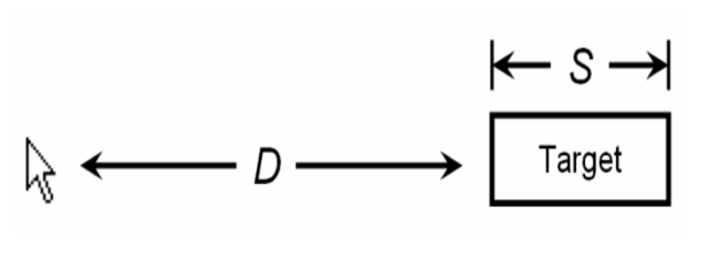<br></div>

<p>&nbsp;&nbsp;&nbsp;&nbsp;&nbsp;&nbsp;菲茨定律是指从起始位置到最终目标所需要的时间是由到目标的距离（也就是图片中的 d)和目标的大小（S）决定的。所以我们得出两个结论：</p>
<ul>
<li>目标越小，就越难点中，目标越大，完成点击的速度越快。</li>
<li>目标离的越远，到达就越费劲。目标越近，完成点击的时间越短</li>
</ul>
<h3 id="菲茨定律在交互上的启示"><a href="#菲茨定律在交互上的启示" class="headerlink" title="菲茨定律在交互上的启示"></a>菲茨定律在交互上的启示</h3><p>1.按钮等可点击区域在合理的范围之内越大越容易点击，反之，可点击区域越小，越不容易操作</p>
<p>2.出现在用户正在操作的对象旁边的菜单，也就是我们常见的右键菜单比下拉菜单或工具栏可以被打开的更快，因为不需要移动到屏幕的其他位置</p>
<p>3.因为边角是巨大的目标，它们无限高或无限宽，但是你不可能用鼠标超过它们。即不管你移动了多远，鼠标最终会停在屏幕的边缘，并定位到按钮或菜单的上面</p>
<h3 id="菲茨定律的实际应用"><a href="#菲茨定律的实际应用" class="headerlink" title="菲茨定律的实际应用"></a>菲茨定律的实际应用</h3><h4 id="按钮等可点击区域在合理的范围之内越大越容易点击"><a href="#按钮等可点击区域在合理的范围之内越大越容易点击" class="headerlink" title="按钮等可点击区域在合理的范围之内越大越容易点击"></a>按钮等可点击区域在合理的范围之内越大越容易点击</h4><div align="center"><br>  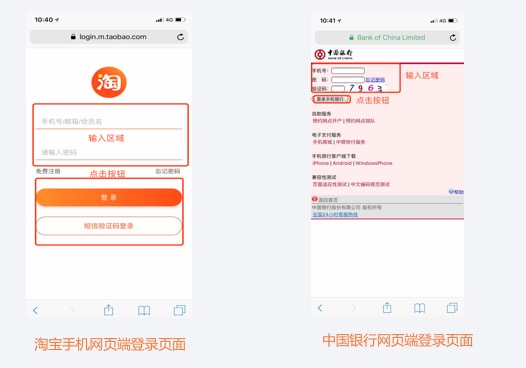<br></div>

<p>&nbsp;&nbsp;&nbsp;&nbsp;&nbsp;&nbsp;比如淘宝和中国银行的手机网页端的登录页面。左边淘宝登录界面的信息输入区域很明显比右边中国银行登录界面信息输入区域相互之间的距离和输入面积更大一点，在视觉及输入体验上面，淘宝也要比中国银行的好很多。再看两个页面的登录按钮，右边中国银行界面的按钮视觉上很小，而且距离上方验证码输入框的距离很近，这样的按钮不仅不好点击还容易产生误操作。相对而言，左图淘宝页面的按钮间距和大小就很合适了，输入和点击体验比右图好很多。</p>
<div align="center"><br>  <br></div>

<p>&nbsp;&nbsp;&nbsp;&nbsp;&nbsp;&nbsp;再看一下小黄车和 hello 单车首页扫码按钮。放在同样的位置，单看按钮大小，小黄车的明显要比小蓝单车的大很多在使用过程中，个人觉得小黄车的操作按钮比 hello 单车的要舒服很多。不需要太聚焦就可以很轻松的点到。</p>
<h4 id="出现在用户正在操作对象旁边的控制菜单（右键菜单）可以被更快的打开"><a href="#出现在用户正在操作对象旁边的控制菜单（右键菜单）可以被更快的打开" class="headerlink" title="出现在用户正在操作对象旁边的控制菜单（右键菜单）可以被更快的打开"></a>出现在用户正在操作对象旁边的控制菜单（右键菜单）可以被更快的打开</h4><div align="center"><br>  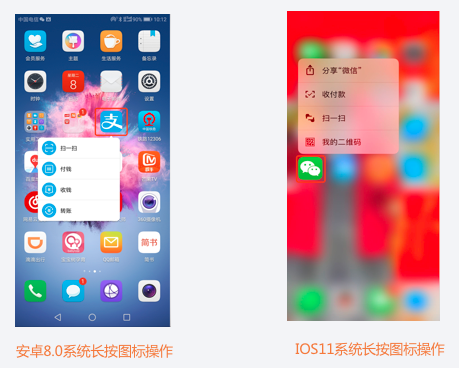<br></div>

<p>&nbsp;&nbsp;&nbsp;&nbsp;&nbsp;&nbsp;这个分别是安卓及 iOS 长按应用图标出现的快捷操作菜单栏，使用其中的功能不需要再反复打开 app,只需要长按就可以快捷打开，这样极大的提升了使用 APP 主要功能的效率。</p>
<div align="center"><br>  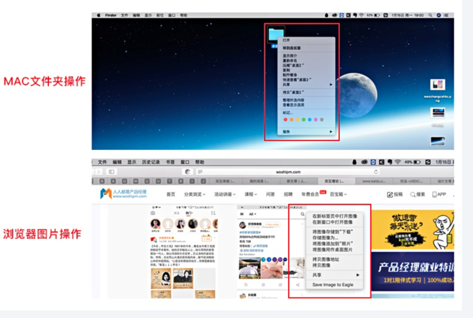<br></div>

<p>&nbsp;&nbsp;&nbsp;&nbsp;&nbsp;&nbsp;这个是在 PC 端的应用。我们在 Mac 系统或者 Windows 系统桌面上对于文件夹的操作，通常是通过鼠标右键点击方式，在出现的操作菜单中对其进行相应的操作，非常方便。</p>
<h4 id="屏幕的边和角很适合放置像菜单栏和按钮这样的元素"><a href="#屏幕的边和角很适合放置像菜单栏和按钮这样的元素" class="headerlink" title="屏幕的边和角很适合放置像菜单栏和按钮这样的元素"></a>屏幕的边和角很适合放置像菜单栏和按钮这样的元素</h4><div align="center"><br>  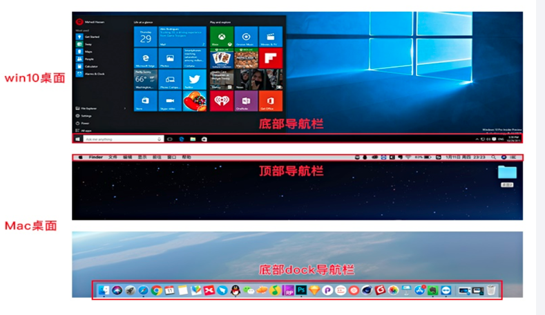<br></div>

<p>&nbsp;&nbsp;&nbsp;&nbsp;&nbsp;&nbsp;这个启示在 PC 端的应用是最经典的。Windows 桌面的默认导航栏是在固定底部的，而 Mac 导航的位置则是在顶部和底部都有。都是固定在屏幕的边缘。就算我们去设计导航栏的位置时，都是停留在屏幕边缘四周，不会出现在屏幕中央的位置。</p>
<div align="center"><br>  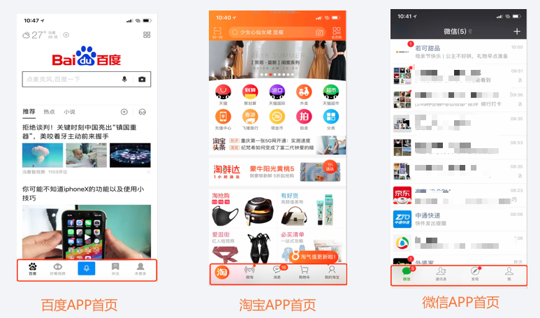<br></div>

<p>&nbsp;&nbsp;&nbsp;&nbsp;&nbsp;&nbsp;这是 BAT 的 APP 首页，最重要导航栏都是放在页面底部的。包括所有做的好的 APP 都是在底部的。这不是恰巧，而是有理据的在移动的设备上，手指就是我们的鼠标。和菲茨定律有所不同，它运用到的是拇指可达性法则。</p>
<h5 id="拇指可达性法则"><a href="#拇指可达性法则" class="headerlink" title="拇指可达性法则"></a>拇指可达性法则</h5><div align="center"><br>  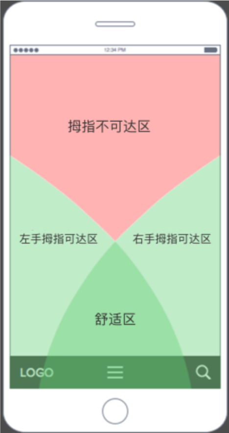<br></div>

<p>&nbsp;&nbsp;&nbsp;&nbsp;&nbsp;&nbsp;大多数用户都用一只手来使用手机。拇指就像用户的鼠标，但有局限性。屏幕上有些地方是拇指无法触及的，这些区域的面积将由用户的手指长度和手机屏幕的大小来决定。屏幕的顶部是拇指最难触达的区域。苹果在设计的时候就很注意这些交互的细节。所以说我们把菜单放在顶部会让用户更难浏览你的界面，但用户使用菜单的频率非常高。我们有必要把优先级最高的菜单放在拇指触手可及的地方，这样用户就能更快地完成他们的任务。而且如果把菜单放在最上面会迫使用户调整手机位置，或者用另一只手进行导航。这都需要进行额外的物理操作，并减慢任务时间。很多共享单车最重要的功能就是扫码骑车。我们可以发现对于他们来说这个最重要的按钮全部都放置在舒适区中，这个是很有道理的。</p>
<h2 id="席克定律"><a href="#席克定律" class="headerlink" title="席克定律"></a>席克定律</h2><div align="center"><br>  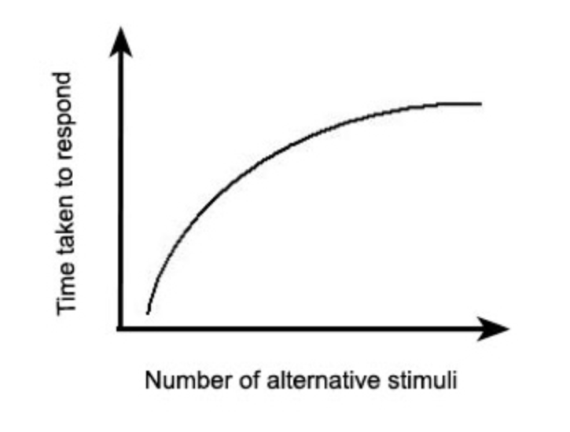<br></div>

<p>&nbsp;&nbsp;&nbsp;&nbsp;&nbsp;&nbsp;如上图所示，x 轴代表选择的数量，y 轴代表做出反应所需要的时间。席克定律指的就是：一个人面临的选择越多，需要作出决定的时间就越长。</p>
<h3 id="席克定律在交互上的启示"><a href="#席克定律在交互上的启示" class="headerlink" title="席克定律在交互上的启示"></a>席克定律在交互上的启示</h3><p>设计中给用户尽量少的选择，减轻用户的决策成本</p>
<h3 id="席克定律的实际应用"><a href="#席克定律的实际应用" class="headerlink" title="席克定律的实际应用"></a>席克定律的实际应用</h3><h4 id="设计中给用户尽量少的选择"><a href="#设计中给用户尽量少的选择" class="headerlink" title="设计中给用户尽量少的选择"></a>设计中给用户尽量少的选择</h4><div align="center"><br>  <br></div>

<p>&nbsp;&nbsp;&nbsp;&nbsp;&nbsp;&nbsp;我们在使用网站或者移动端产品时，经常会遇到很多操作弹窗。就像图中的两个例子，基本上弹窗的操作选项只会有两个，二选一的成本，对于用户来讲很简单方便，选择成本最小</p>
<div align="center"><br>  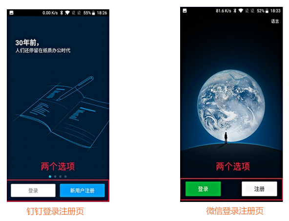<br></div>

<p>&nbsp;&nbsp;&nbsp;&nbsp;&nbsp;&nbsp;当用户初次下载使用钉钉或者微信 APP 的时候，在进入正常的使用之前，用户会看到这个页面。我们看下面两个截图，页面上的操作按钮只有两个，一个登录按钮和一个注册按钮，这样的话，用户就很清晰接下来自己要干什么了</p>
<h2 id="神奇的-7±2-法则"><a href="#神奇的-7±2-法则" class="headerlink" title="神奇的 7±2 法则"></a>神奇的 7±2 法则</h2><p>&nbsp;&nbsp;&nbsp;&nbsp;&nbsp;&nbsp;956 年乔治米勒对短时记忆能力进行了定量研究，他发现人类头脑最好的状态能记忆含有 7（±2）项信息块，在记忆了 5-9 项信息后人类的头脑就开始出错。与席克定律类似，神奇数字 7±2 法则也经常被应用在移动应用交互设计上，应用的选项卡不会超过 5 个.</p>
<h3 id="神奇的-7±2-法则在交互上的启示"><a href="#神奇的-7±2-法则在交互上的启示" class="headerlink" title="神奇的 7±2 法则在交互上的启示"></a>神奇的 7±2 法则在交互上的启示</h3><p>1.PC 端导航或选项卡尽量不要超过 9 个，APP 应用的选项卡尽量不要超过 5 个</p>
<p>2.如果导航或选项卡内容很多，可以用一个层级结构来展示各段及其子段</p>
<p>3.把大块整段的信息分割成各个小段，并显著标记每个信息段的主体</p>
<h3 id="神奇的-7±2-法则的实际应用"><a href="#神奇的-7±2-法则的实际应用" class="headerlink" title="神奇的 7±2 法则的实际应用"></a>神奇的 7±2 法则的实际应用</h3><h4 id="PC-端导航或选项卡尽量不要超过-9-个，APP-应用的选项卡尽量不要超过-5-个"><a href="#PC-端导航或选项卡尽量不要超过-9-个，APP-应用的选项卡尽量不要超过-5-个" class="headerlink" title="PC 端导航或选项卡尽量不要超过 9 个，APP 应用的选项卡尽量不要超过 5 个"></a>PC 端导航或选项卡尽量不要超过 9 个，APP 应用的选项卡尽量不要超过 5 个</h4><div align="center"><br>  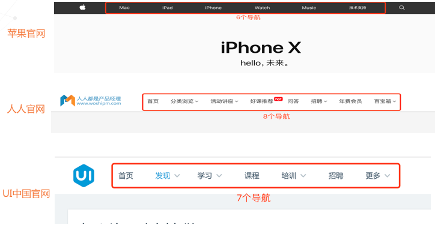<br></div>

<p>&nbsp;&nbsp;&nbsp;&nbsp;&nbsp;&nbsp;比如苹果、人人都是产品经理及 UI 中国官网导航栏,我们看到这三个主流网站的导航栏模块都没有超过 9 个，这样做的好处在于让用户对于网站的内容一目了然，更加快捷。</p>
<div align="center"><br>  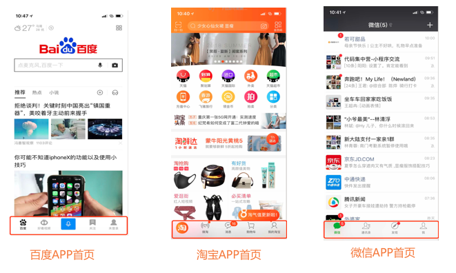<br></div>

<p>&nbsp;&nbsp;&nbsp;&nbsp;&nbsp;&nbsp;说完 PC 的，我们说下移动端的，在使用 APP 的时候，我们都会用到软件的底部导航区域。会发现任何软件的底部导航都不会超过 5 个，就像图中的百度，微信及 QQ 界面一样，底部导航也没有超过五个的。这个就运用到了神奇的 7±2 法则。就比如我们要去微信看朋友圈。我们大脑下意识就会去点击 我里面的朋友圈。不会再一个个的去看完选项卡的内容。因为我们大脑已经大致记住了各个导航的位置。如果导航栏实在多的情况下呢，我们来看看解决方法。</p>
<h4 id="如果导航或选项卡内容很多，可以用一个层级结构来展示各段及其子段"><a href="#如果导航或选项卡内容很多，可以用一个层级结构来展示各段及其子段" class="headerlink" title="如果导航或选项卡内容很多，可以用一个层级结构来展示各段及其子段"></a>如果导航或选项卡内容很多，可以用一个层级结构来展示各段及其子段</h4><div align="center"><br>  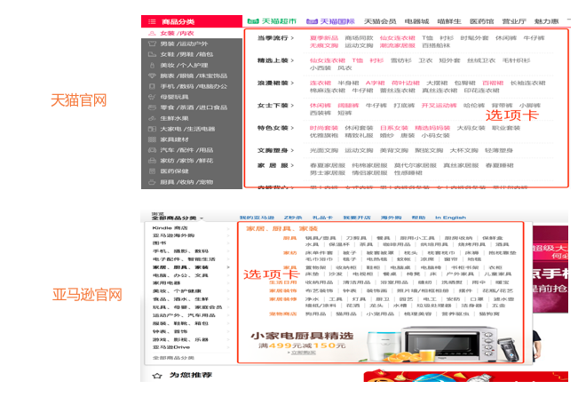<br></div>

<p>&nbsp;&nbsp;&nbsp;&nbsp;&nbsp;&nbsp;比如天猫商城和亚马逊网站的商品分类选项卡,他们的导航是分为多个层级的。如果以后遇到导航的内容非常多的话，我们就可以将它整合归类来分层级收纳。就像天猫和亚马逊官网对于商品分类的处理方式一样，使用爷爷爸爸孩子的层级递进方式来归类展示商品。</p>
<div align="center"><br>  <br></div>

<p>&nbsp;&nbsp;&nbsp;&nbsp;&nbsp;&nbsp;我们再来看下京东及朴朴 APP 的商品分类模块界面，两个产品的商品分类布局形式很相似，都是用了选项卡的方式来分类商品，他们层级明确，用户如果想买哈密瓜就是水果里面找，这样就相应的提升了用户找寻商品的效率。</p>
<h4 id="把大块整段的信息分割成各个小段，并显著标记每个信息段的主体"><a href="#把大块整段的信息分割成各个小段，并显著标记每个信息段的主体" class="headerlink" title="把大块整段的信息分割成各个小段，并显著标记每个信息段的主体"></a>把大块整段的信息分割成各个小段，并显著标记每个信息段的主体</h4><div align="center"><br>  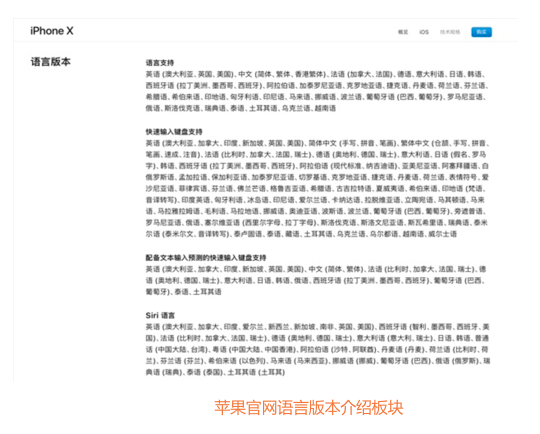<br></div>

<p>&nbsp;&nbsp;&nbsp;&nbsp;&nbsp;&nbsp;比如苹果官网 iPhone X 对于语言版本的介绍板块。如图所示，语言版本介绍模块把一整段语言，分成四个模块的信息来介绍，而且每个模块都要自己的标题，再加上段落之间的空间留白，使得此段信息看起来清晰明了。用户可以一目了然的了解每段的主题</p>
<div align="center"><br>  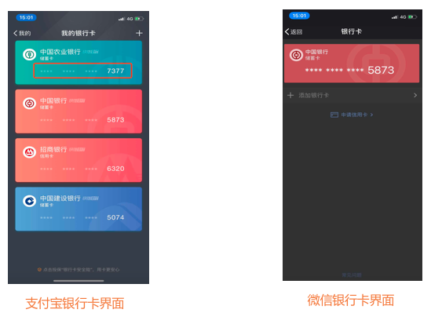<br></div>

<p>&nbsp;&nbsp;&nbsp;&nbsp;&nbsp;&nbsp;比如支付宝和微信银行卡界面卡号信息的展示方式。无论是支付宝还是微信甚至是大多数银行，卡号信息都采用了分段的方式，让我们便于记忆。来介绍，而且每个模块都要自己的标题，再加上段落之间的空间留白，使得此段信息看起来清晰明了。用户可以一目了然的了解每段的主题</p>

      
    </div>
    <footer class="article-footer">
      
        <div id="donation_div"></div>

<script src="/js/vdonate.js"></script>
<script>
var a = new Donate({
  title: '如果觉得我的文章对您有用，请随意打赏。您的支持将鼓励我继续创作!', // 可选参数，打赏标题
  btnText: '打赏支持', // 可选参数，打赏按钮文字
  el: document.getElementById('donation_div'),
  wechatImage: '../images/wx.jpeg',
  alipayImage: '../images/zfb.jpg'
});
</script>
      
      
      <div>
        <ul class="post-copyright">
          <li class="post-copyright-author">
          <strong>本文作者:  </strong>guowj
          </li>
          <li class="post-copyright-link">
          <strong>本文链接:  </strong>
          <a href="/交互设计七大定律上/" target="_blank" title="交互设计七大定律上">https://gwjacqueline.github.io/交互设计七大定律上/</a>
          </li>
          <li class="post-copyright-license">
            <strong>版权声明:   </strong>
            本博客所有文章除特别声明外，均采用 <a rel="license" href="https://creativecommons.org/licenses/by-nc-nd/4.0/" target="_blank" title="Attribution-NonCommercial-NoDerivatives 4.0 International (CC BY-NC-ND 4.0)">CC BY-NC-ND 4.0</a>
            许可协议。转载请注明出处
          </li>
         
        </ul>
<div>
</div></div>
      
      
        
	<div id="comment">
		<!-- 来必力City版安装代码 -->
		<div id="lv-container" data-id="city" data-uid="MTAyMC80MzU1OS8yMDA5OA==" ">
		<script type="text/javascript">
		   (function(d, s) {
		       var j, e = d.getElementsByTagName(s)[0];

		       if (typeof LivereTower === 'function') { return; }

		       j = d.createElement(s);
		       j.src = 'https://cdn-city.livere.com/js/embed.dist.js';
		       j.async = true;

		       e.parentNode.insertBefore(j, e);
		   })(document, 'script');
		</script>
		<noscript>为正常使用来必力评论功能请激活JavaScript</noscript>
		</div>
		<!-- City版安装代码已完成 -->
	</div>


      
      
        
  <ul class="article-tag-list"><li class="article-tag-list-item"><a class="article-tag-list-link" href="/tags/交互设计/">交互设计</a></li><li class="article-tag-list-item"><a class="article-tag-list-link" href="/tags/产品/">产品</a></li></ul>

      

    </footer>
  </div>
  
    
<nav id="article-nav">
  
    <a href="/交互设计七大定律下/" id="article-nav-newer" class="article-nav-link-wrap">
      <strong class="article-nav-caption">上一篇</strong>
      <div class="article-nav-title">
        
          交互设计七大定律下
        
      </div>
    </a>
  
  
    <a href="/kano模型/" id="article-nav-older" class="article-nav-link-wrap">
      <strong class="article-nav-caption">下一篇</strong>
      <div class="article-nav-title">kano模型</div>
    </a>
  
</nav>

  
</article>

<!-- Table of Contents -->

  <aside id="toc-sidebar">
    <div id="toc" class="toc-article">
    <strong class="toc-title">文章目录</strong>
    
        <ol class="nav"><li class="nav-item nav-level-2"><a class="nav-link" href="#菲茨定律"><span class="nav-number">1.</span> <span class="nav-text">菲茨定律</span></a><ol class="nav-child"><li class="nav-item nav-level-3"><a class="nav-link" href="#菲茨定律在交互上的启示"><span class="nav-number">1.1.</span> <span class="nav-text">菲茨定律在交互上的启示</span></a></li><li class="nav-item nav-level-3"><a class="nav-link" href="#菲茨定律的实际应用"><span class="nav-number">1.2.</span> <span class="nav-text">菲茨定律的实际应用</span></a><ol class="nav-child"><li class="nav-item nav-level-4"><a class="nav-link" href="#按钮等可点击区域在合理的范围之内越大越容易点击"><span class="nav-number">1.2.1.</span> <span class="nav-text">按钮等可点击区域在合理的范围之内越大越容易点击</span></a></li><li class="nav-item nav-level-4"><a class="nav-link" href="#出现在用户正在操作对象旁边的控制菜单（右键菜单）可以被更快的打开"><span class="nav-number">1.2.2.</span> <span class="nav-text">出现在用户正在操作对象旁边的控制菜单（右键菜单）可以被更快的打开</span></a></li><li class="nav-item nav-level-4"><a class="nav-link" href="#屏幕的边和角很适合放置像菜单栏和按钮这样的元素"><span class="nav-number">1.2.3.</span> <span class="nav-text">屏幕的边和角很适合放置像菜单栏和按钮这样的元素</span></a><ol class="nav-child"><li class="nav-item nav-level-5"><a class="nav-link" href="#拇指可达性法则"><span class="nav-number">1.2.3.1.</span> <span class="nav-text">拇指可达性法则</span></a></li></ol></li></ol></li></ol></li><li class="nav-item nav-level-2"><a class="nav-link" href="#席克定律"><span class="nav-number">2.</span> <span class="nav-text">席克定律</span></a><ol class="nav-child"><li class="nav-item nav-level-3"><a class="nav-link" href="#席克定律在交互上的启示"><span class="nav-number">2.1.</span> <span class="nav-text">席克定律在交互上的启示</span></a></li><li class="nav-item nav-level-3"><a class="nav-link" href="#席克定律的实际应用"><span class="nav-number">2.2.</span> <span class="nav-text">席克定律的实际应用</span></a><ol class="nav-child"><li class="nav-item nav-level-4"><a class="nav-link" href="#设计中给用户尽量少的选择"><span class="nav-number">2.2.1.</span> <span class="nav-text">设计中给用户尽量少的选择</span></a></li></ol></li></ol></li><li class="nav-item nav-level-2"><a class="nav-link" href="#神奇的-7±2-法则"><span class="nav-number">3.</span> <span class="nav-text">神奇的 7±2 法则</span></a><ol class="nav-child"><li class="nav-item nav-level-3"><a class="nav-link" href="#神奇的-7±2-法则在交互上的启示"><span class="nav-number">3.1.</span> <span class="nav-text">神奇的 7±2 法则在交互上的启示</span></a></li><li class="nav-item nav-level-3"><a class="nav-link" href="#神奇的-7±2-法则的实际应用"><span class="nav-number">3.2.</span> <span class="nav-text">神奇的 7±2 法则的实际应用</span></a><ol class="nav-child"><li class="nav-item nav-level-4"><a class="nav-link" href="#PC-端导航或选项卡尽量不要超过-9-个，APP-应用的选项卡尽量不要超过-5-个"><span class="nav-number">3.2.1.</span> <span class="nav-text">PC 端导航或选项卡尽量不要超过 9 个，APP 应用的选项卡尽量不要超过 5 个</span></a></li><li class="nav-item nav-level-4"><a class="nav-link" href="#如果导航或选项卡内容很多，可以用一个层级结构来展示各段及其子段"><span class="nav-number">3.2.2.</span> <span class="nav-text">如果导航或选项卡内容很多，可以用一个层级结构来展示各段及其子段</span></a></li><li class="nav-item nav-level-4"><a class="nav-link" href="#把大块整段的信息分割成各个小段，并显著标记每个信息段的主体"><span class="nav-number">3.2.3.</span> <span class="nav-text">把大块整段的信息分割成各个小段，并显著标记每个信息段的主体</span></a></li></ol></li></ol></li></ol>
    
    </div>
  </aside>

</section>
        
      </div>
      
      <footer id="footer">
  

  <div class="container">
      	<div class="row">
	      <!--<p> Powered by <a href="http://hexo.io/" target="_blank">Hexo</a> and <a href="https://github.com/iTimeTraveler/hexo-theme-hiker" target="_blank">Hexo-theme-hiker</a> </p>-->
	      <p id="copyRightEn">Copyright &copy;2019 guowj All Rights Reserved.</p>
	      
	      
    		<p class="busuanzi_uv">
				访客数 : <span id="busuanzi_value_site_uv"></span> |  
				访问量 : <span id="busuanzi_value_site_pv"></span>
		    </p>
  		   
		</div>

		
  </div>
</footer>


<!-- min height -->

<script>
    var wrapdiv = document.getElementById("wrap");
    var contentdiv = document.getElementById("content");
    var allheader = document.getElementById("allheader");

    wrapdiv.style.minHeight = document.body.offsetHeight + "px";
    if (allheader != null) {
      contentdiv.style.minHeight = document.body.offsetHeight - allheader.offsetHeight - document.getElementById("footer").offsetHeight + "px";
    } else {
      contentdiv.style.minHeight = document.body.offsetHeight - document.getElementById("footer").offsetHeight + "px";
    }
</script>
    </div>
    <!-- <nav id="mobile-nav">
  
    <a href="/" class="mobile-nav-link">Home</a>
  
    <a href="/archives" class="mobile-nav-link">Archives</a>
  
    <a href="/categories" class="mobile-nav-link">Categories</a>
  
    <a href="/tags" class="mobile-nav-link">Tags</a>
  
</nav> -->
    

<!-- mathjax config similar to math.stackexchange -->

<script type="text/x-mathjax-config">
  MathJax.Hub.Config({
    tex2jax: {
      inlineMath: [ ['$','$'], ["\\(","\\)"] ],
      processEscapes: true
    }
  });
</script>

<script type="text/x-mathjax-config">
    MathJax.Hub.Config({
      tex2jax: {
        skipTags: ['script', 'noscript', 'style', 'textarea', 'pre', 'code']
      }
    });
</script>

<script type="text/x-mathjax-config">
    MathJax.Hub.Queue(function() {
        var all = MathJax.Hub.getAllJax(), i;
        for(i=0; i < all.length; i += 1) {
            all[i].SourceElement().parentNode.className += ' has-jax';
        }
    });
</script>

<script type="text/javascript" src="https://cdnjs.cloudflare.com/ajax/libs/mathjax/2.7.1/MathJax.js?config=TeX-AMS-MML_HTMLorMML">
</script>


  <link rel="stylesheet" href="/fancybox/jquery.fancybox.css">
  <script src="/fancybox/jquery.fancybox.pack.js"></script>


<script src="/js/scripts.js"></script>


  <script src="/js/dialog.js"></script>


	<div style="display: none;">
    <script src="https://s95.cnzz.com/z_stat.php?id=1260716016&web_id=1260716016" language="JavaScript"></script>
  </div>


	<script async src="//busuanzi.ibruce.info/busuanzi/2.3/busuanzi.pure.mini.js">
	</script>


  </div>

  <div class="modal fade" id="myModal" tabindex="-1" role="dialog" aria-labelledby="myModalLabel" aria-hidden="true" style="display: none;">
  <div class="modal-dialog">
    <div class="modal-content">
      <div class="modal-header">
        <h2 class="modal-title" id="myModalLabel">设置</h2>
      </div>
      <hr style="margin-top:0px; margin-bottom:0px; width:80%; border-top: 3px solid #000;">
      <hr style="margin-top:2px; margin-bottom:0px; width:80%; border-top: 1px solid #000;">


      <div class="modal-body">
          <div style="margin:6px;">
            <a data-toggle="collapse" data-parent="#accordion" href="#collapseOne" onclick="javascript:setFontSize();" aria-expanded="true" aria-controls="collapseOne">
              正文字号大小
            </a>
          </div>
          <div id="collapseOne" class="panel-collapse collapse" role="tabpanel" aria-labelledby="headingOne">
          <div class="panel-body">
            您已调整页面字体大小
          </div>
        </div>
      


          <div style="margin:6px;">
            <a data-toggle="collapse" data-parent="#accordion" href="#collapseTwo" onclick="javascript:setBackground();" aria-expanded="true" aria-controls="collapseTwo">
              夜间护眼模式
            </a>
        </div>
          <div id="collapseTwo" class="panel-collapse collapse" role="tabpanel" aria-labelledby="headingTwo">
          <div class="panel-body">
            夜间模式已经开启，再次单击按钮即可关闭 
          </div>
        </div>

        <div>
            <a data-toggle="collapse" data-parent="#accordion" href="#collapseThree" aria-expanded="true" aria-controls="collapseThree">&nbsp;&nbsp;&nbsp;&nbsp;&nbsp;&nbsp;关 于&nbsp;&nbsp;&nbsp;&nbsp;&nbsp;&nbsp;</a>
        </div>
         <div id="collapseThree" class="panel-collapse collapse" role="tabpanel" aria-labelledby="headingThree">
          <div class="panel-body">
            guowj
          </div>
          <div class="panel-body">
            Copyright © 2019 guowj All Rights Reserved.
          </div>
        </div>
      </div>


      <hr style="margin-top:0px; margin-bottom:0px; width:80%; border-top: 1px solid #000;">
      <hr style="margin-top:2px; margin-bottom:0px; width:80%; border-top: 3px solid #000;">
      <div class="modal-footer">
        <button type="button" class="close" data-dismiss="modal" aria-label="Close"><span aria-hidden="true">×</span></button>
      </div>
    </div>
  </div>
</div>
  
  <a id="rocket" href="#top" class=""></a>
  <script type="text/javascript" src="/js/totop.js?v=1.0.0" async=""></script>
  
    <a id="menu-switch"><i class="fa fa-bars fa-lg"></i></a>
  
</body>
</html>